Project overview
This project is a redsign of the website LuxuryByHo. LuxuryByHo is vintage designer bag seller that is super popular in Denmark. I did this project to practice my design skills on something outside of school. The project is not in collaboration with LuxuryByHo, but just for my own Portfolio.
My role
→ Reserach
→ UX / UI Design
The Design process
For my design process i spend quite a lot of time on my Figma prototype, since this is not at project that i have coded. I chose to get rid og the dark colors that are currently usd on the LuxuryByHo site. This included the black header + footer and the green color that is used for buttons throughout the site.
To give the site a more clean and refreshing look i decided to keeps the light grey color that the site already uses for the main content, but i changed the header to white to give it a brighter look.
I also chose to make the filter and sort function into at fold down on the site, instead of having it on the left side, open constantly.This helps with a more clean look, that is not too cluttered by unnecessary buttons and text.
For my moodboard it is obvious that my vision was to have a grey color palette with with a simple content lalyout. For my styletile as well, i chose a thin font and grey icons. Alle buttons are also grey, although a very dark grey, but not completely black, as it is a bit easier on the eye.
Moodboard
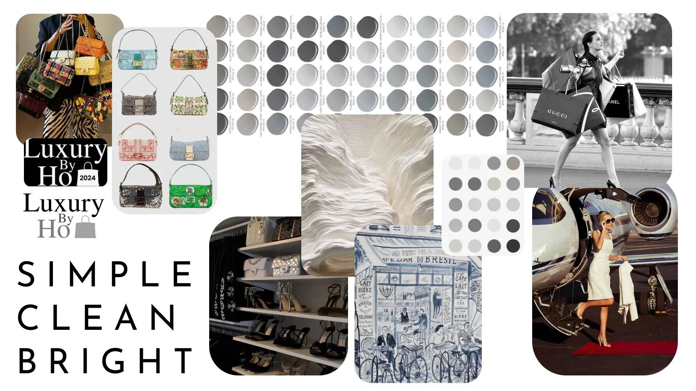Styletile
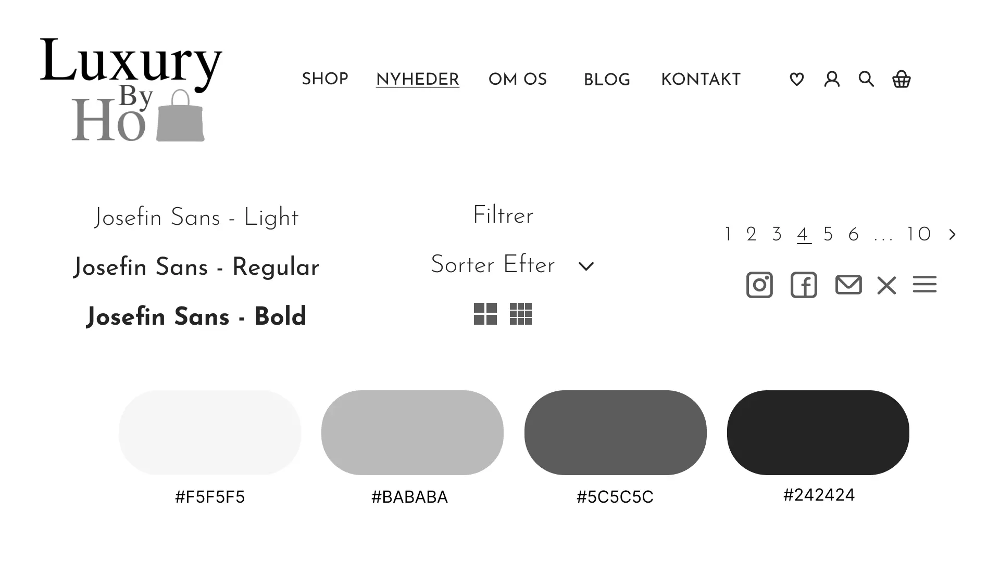Laying out the content
Below are some of the wireframes i created for this project. There are of course a few more pages than this on the website, but some of them are very alike and therefore i have chosen to include only these pages. The pages included are the following: Home, Shop, Product, About us, Blog, Blog-page, Contact and Account
 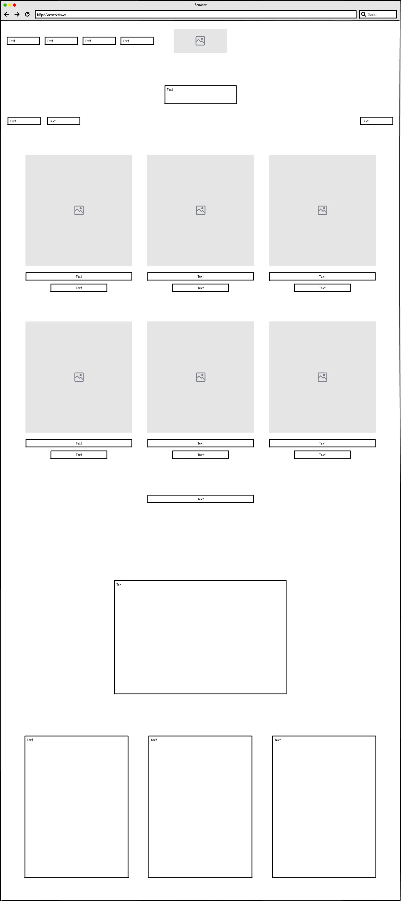
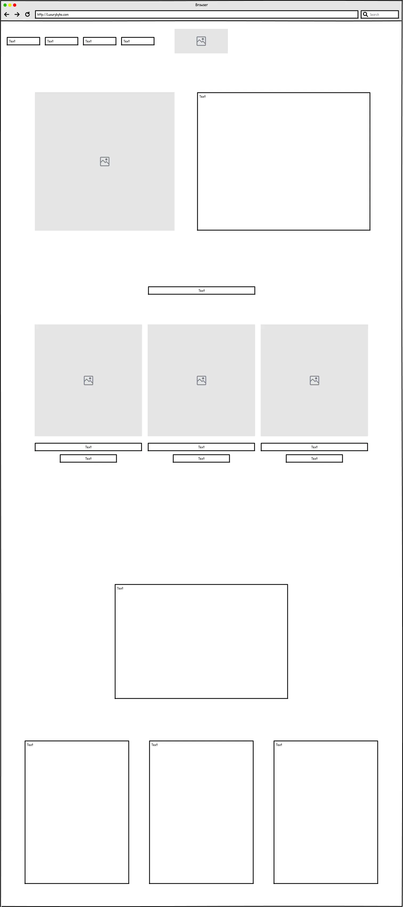
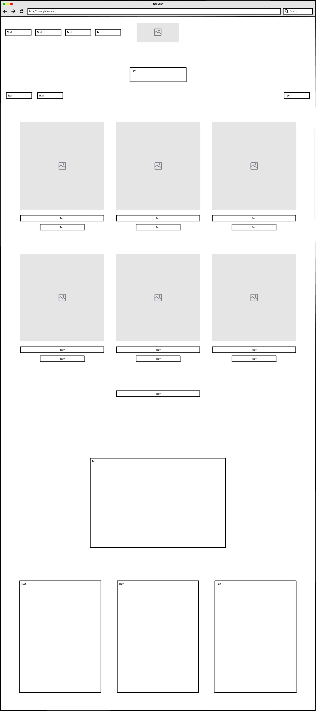
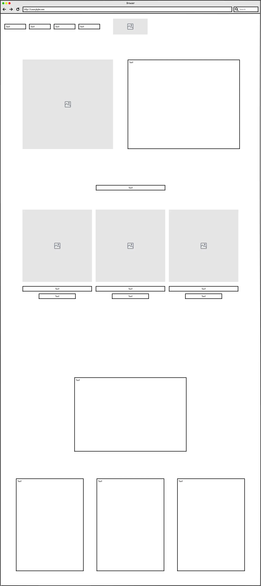
 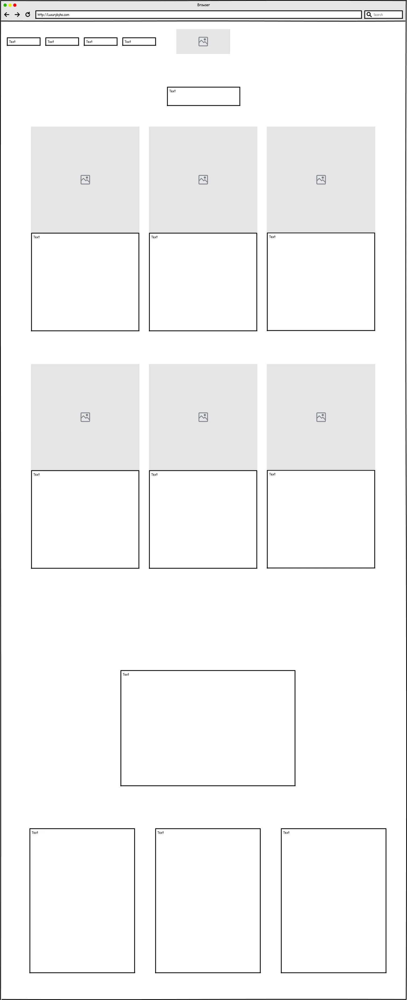
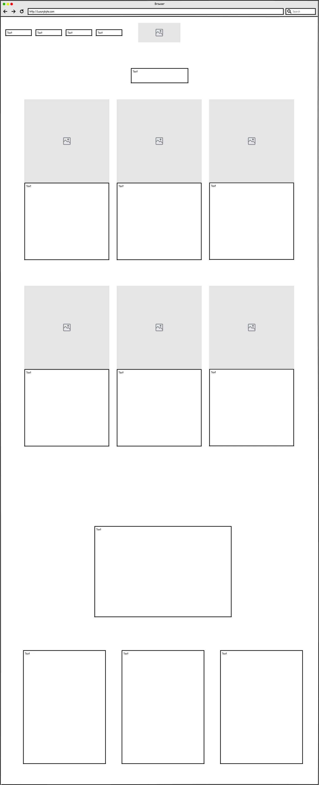
 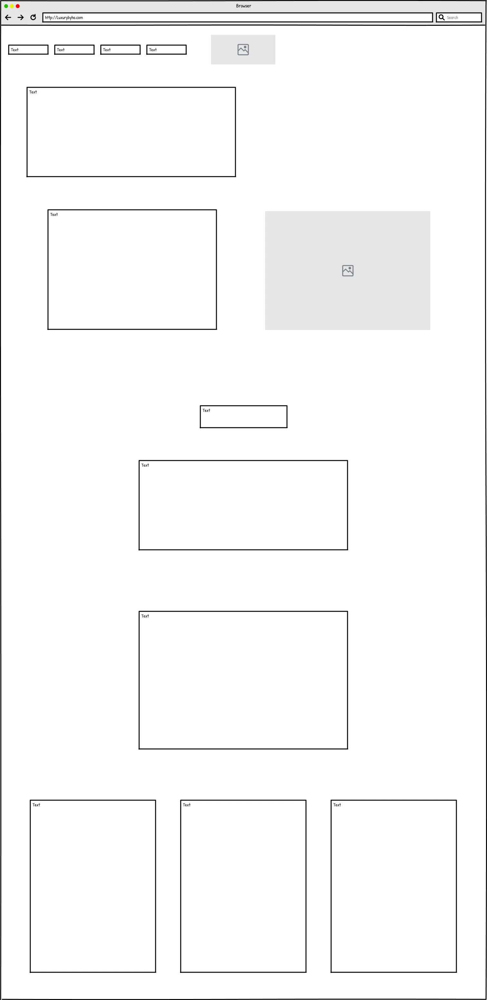
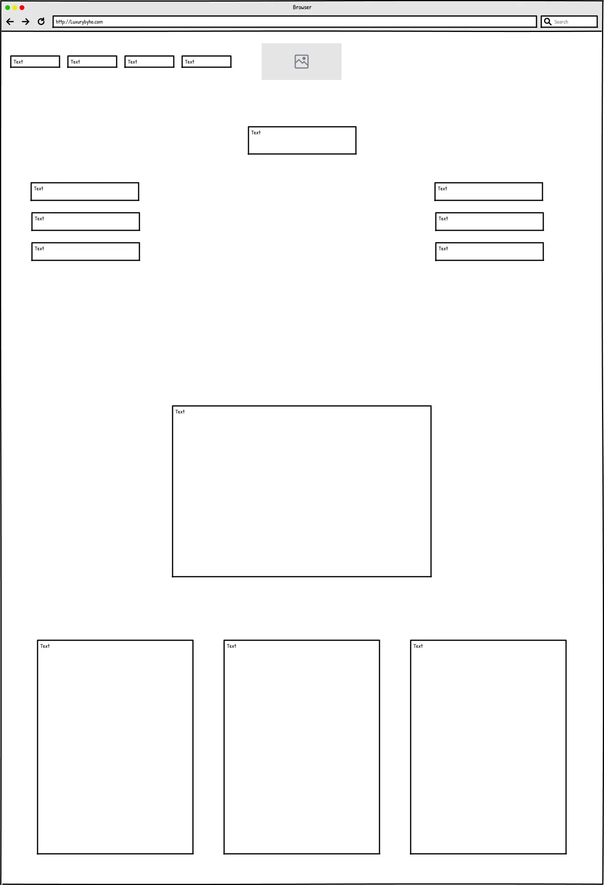
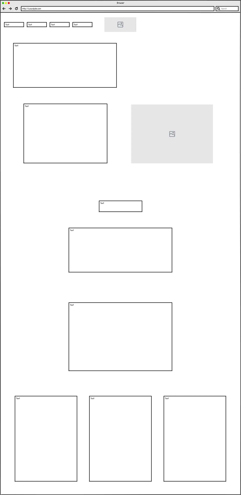
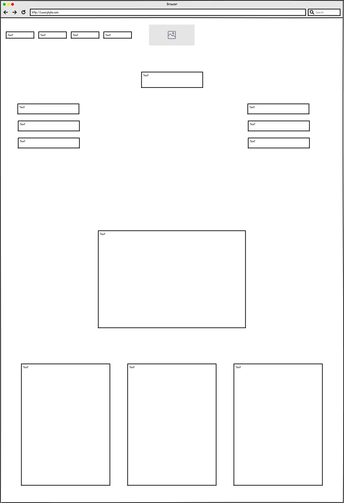
The final result
I want to maintain the same target group that the company already focuses on. But i wanted to give the wite an update, to give it a more bright and refreshing feel. The current LuxuryByHo page is currently very dark and cluttered. I found it to be a bit overwhelming with all the different functions and the generel layout of the site. Because of this i chose to use a lot of lighter colors, and i tried cleaning up the content of the site a bit by removing certain buttons and functions.
Some major changes i made were:
→ Adding an account function for the customers to view orders, returns etc.
→ Adding a wishlist function, again for the customers to save products on their accounts wishlist.
→ Removed the "Most popular", "Brand" and "Sale" category from the menubar. These can be chosen on the filter function on the shop page.